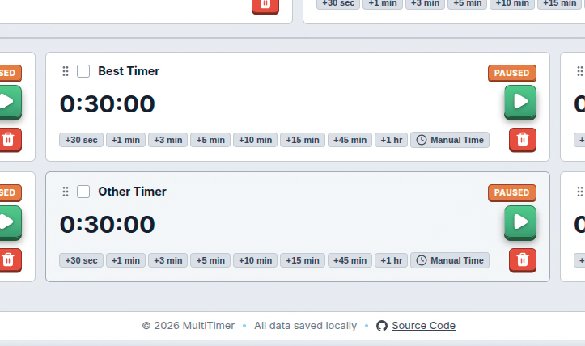
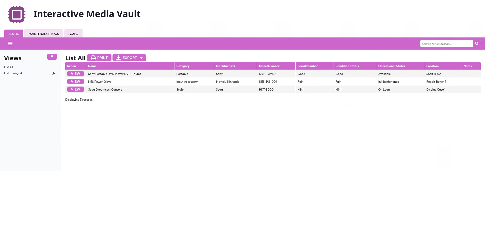
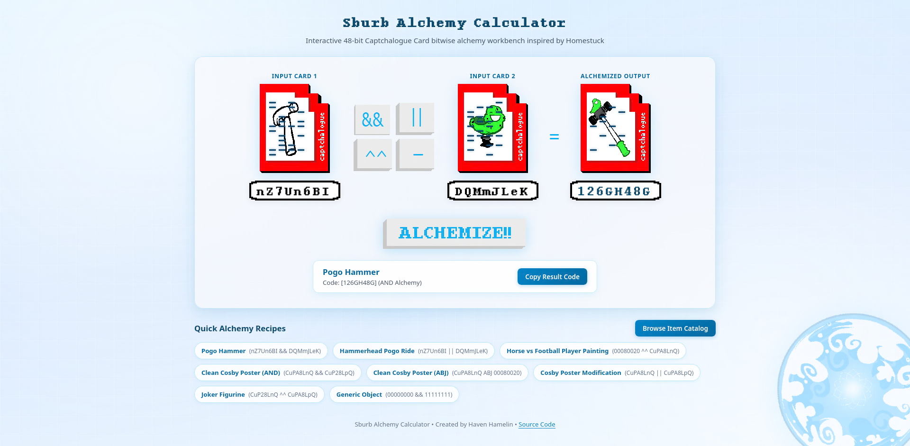
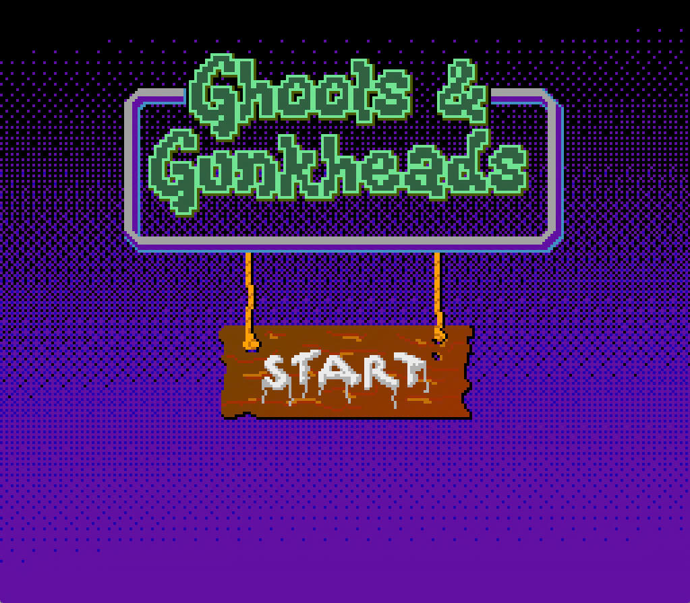
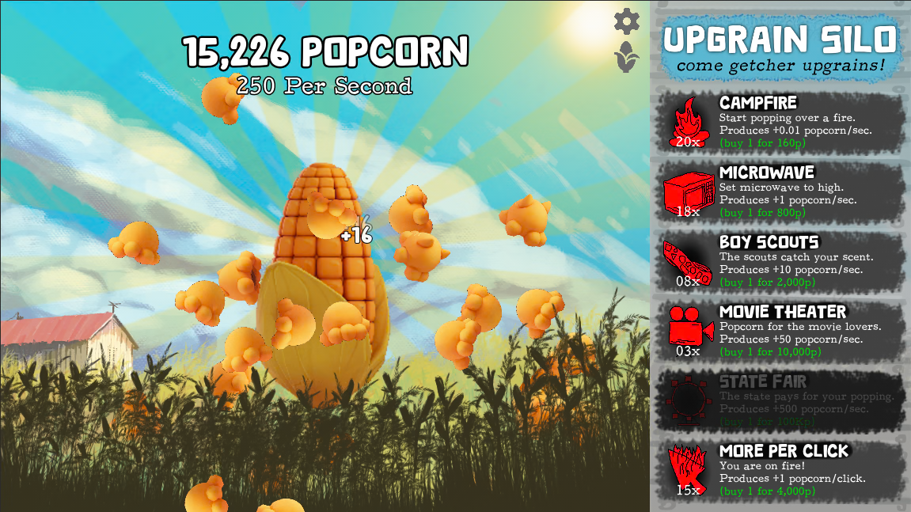
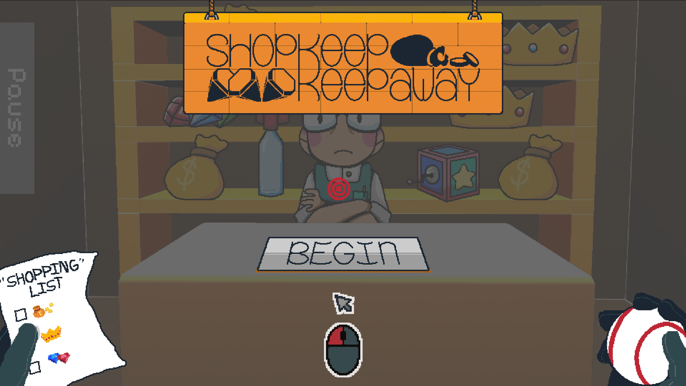
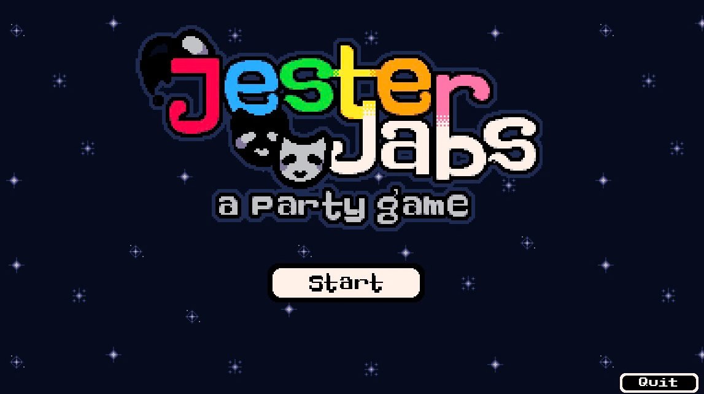
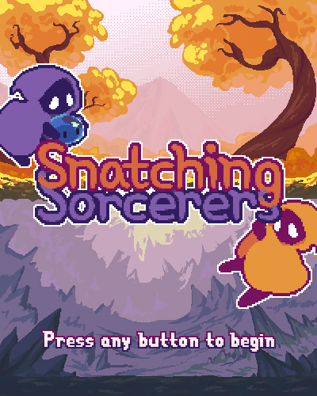

Projects Showcase
MultiTimer

Responsive countdown timer dashboard for service environments where multiple customers need to be tracked simultaneously. Supports up to 21 independent timers with bulk selection, quick time adjustments, drag-and-drop reordering, per-timer color tags, and audio/confetti expiry alerts. State persists across reloads via localStorage.
Software Used:


")
LUDDYVerse

Museum Demo
Private Repo
An XR digital museum created for MARLA (IU Indianapolis' game preservation museum) to expand its physical collection into Virtual Reality. Developed in collaboration with Zebulun Wood and the MARLA Committee, the project uses a custom database to store 3D environments and artifacts that overlay onto physical space using Meta Quest 3. Leveraged Matterport spatial scans, Maya scene compositing, and Unity to engineer an engine-agnostic workflow adaptable to any room.
Software Used:


LOREBoards

Game completion and leaderboard tracker where players log finished games, high scores, and personal notes. Features IGDB game search integration, Firebase authentication, real-time Firestore database for full CRUD operations, and a responsive web and mobile experience.
Software Used:


Interactive Media Vault

Relational low-code database and operations portal built in TeamDesk to manage hardware assets, retro consoles, controllers, and portable media devices. Features custom 1-to-many table relationships linking master hardware inventory with maintenance work orders and exhibition loan tracking, paired with automated workflow triggers that dynamically update asset statuses upon loan checkouts and returns.
Software Used:
Silly Sanctuary

Pet adoption web application featuring a catalog of adoptable companions, search and filter options by breed and traits, detailed pet personality profiles, user registration, and interactive pet reservation requests.
Software Used:


MyWorkspace

Personal productivity workspace application featuring interactive notes management, task tracking, and mood journaling. Built with a responsive layout providing a seamless experience across desktop and mobile devices.
Software Used:
travellin' sweet
Capstone Demo
Private Repo
Engineered in Godot with a purpose-built 3D physics environment configured to simulate top-down 2D gameplay. Highlights include a dynamic dialogue system, a combo trick tracking engine, and a custom pipeline converting 3D Blender skateboard models into 2D pixel art spritesheets.
Software Used:


Alchemy Calculator

A recreation of an "alchemy crafting" system that uses bitwise math on the item's unique code. This code is represented as a punched card, which can be combined with other cards through various operations. The original had ‘and’ and ‘or’, but I also added ‘xor’ and ‘abjunction’.
Software Used:
Ghools & Gunkheads

Take on cryptids of the night as a swamp-loving hillbilly in this action-rhythm shooter created for NES Jam 2026. Jump around avoiding creature attacks while hitting rhythmic guitar prompts to load shotgun shells and blast spooky monsters!
Software Used:
The Corn Popper

An interactive popcorn-themed clicker game built for Crossroads Game Jam 2026. Click the cob to harvest popcorn, invest in automated upgrades to boost production, and optimize your strategy to maximize your popcorn profits!
Software Used:
Shopkeep Keepaway

Fulfill your "shopping list" in this minigame-style stealth arcade game, Shopkeep Keepaway! Use an array of items in the shop at your disposal to distract the shopkeep and knock target items off the shelf by throwing a baseball to collect all items without getting caught.
Software Used:
Jester Jabs

A jester-themed party game consisting of a variety of joke-based minigames where you attempt to best the other players through fun challenges. Plenty of opportunities for mad-lib style joke creation! The game provides a familiar, yet distinct experience to popular games like Quiplash.
Software Used:
Snatching Sorcerers

Two player infinite arcade-style action game where one player controls the top character with the mouse and the other player controls the bottom player using the arrow keys. The top player catches the falling elements and if they fail the elements become enemies for the bottom player.
Software Used:
About Me

Bridging the gap between creative game design
and modern web development.
For as long as I can remember, I've been tinkering with technology under the hood—self-hosting FOSS server software, hacking together Linux-based gadgets, and managing systems through the command line. That lifelong curiosity for software and hardware directly led to my Media Arts & Sciences degree from IU Indy in Game Design, Web Development, and Digital Storytelling.
I am comfortable with a variety of web frameworks (React, Next.js, Vanilla JS) and enjoy learning about their advantages and disadvantages. I am also able to utilize a multitude of game engines (Godot, Unity, Unreal) but tend to stick to Godot for personal projects, due to its lightweight nature. I take a multidisciplinary approach to both web development and game design, weaving together the principles of both mediums.
When approaching projects, I adapt my methodology to the problem at hand—whether executing precise, non-agentic development or leveraging autonomous agentic AI workflows to accelerate complex architectural tasks.
Technical Skills & Expertise
Game Development
Godot
Unity
Unreal Engine
Meta XR SDK
Aseprite
MC Datapacks
Frontend
React
React Native
JavaScript
TypeScript
Sass (SCSS)
Tailwind CSS
Backend
Node.js
API Integration
SQL (PostgreSQL, MySQL, SQLite)
Excel Functions
Linux
Git